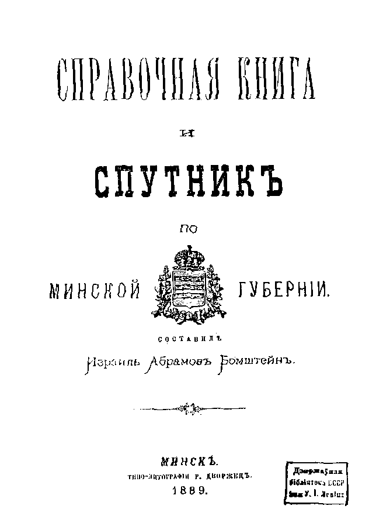
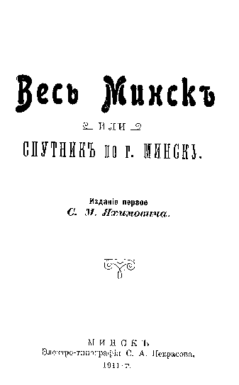

This database contains extracted information about nearly
9,000 homeowners in the city of Minsk, transliterated from two
Russian guidebooks to the city of Minsk, for 1889 and 1911:

The 1889 Minsk City Homeowners list that appeared in the book Spravochnaya Kniga i Sputnik po Minskoy Gubernii (Information Book and the Guide to Minsk Gubernia) issued in Minsk in 1889 and compiled by Izrail Abramovich Bomshtein.
To see a sample page from the 1889 book, click here.
The database contains 3,316 entries of homeowners in the town of Minsk, both Jews and non-Jews. Approximately two-thirds of the entries are Jewish names. On most streets in Minsk, both Jews and non-Jews lived side by side.

The 1911 Minsk City Homeowners list that appeared in the book Ves' Minsk ili Sputnik po g. Minsku (The Whole Minsk or Guide to the City of Minsk), 1st edition, by S. M. Yakhimovich, published in Minsk in 1911 by Electric Typography of S. A. Nekrasov.
To see a sample pages from the 1911 book, click the following: Cover page, Table of Contents, Sample data page, Advertisements.
The 1911 list contains 5,608 entries of homeowners in the town of Minsk, both Jews and non-Jews. The majority of entries are Jews, but the percentage of Jews is less then in the 1889 list. The later list reflects the population growth in Minsk because of the development of industry and the railroads, as well as the expansion of government jobs. This attracted masses of former peasants searching for new opportunities.
During a visit to Minsk in August of 1999, David Fox purchased copies of the pages (129 to 233) from the 1889 book, and pages from the 1911 book, which included the Minsk Homeowner's Lists. The books were located in the Minsk Public Library with the assistance of the Minsk Historical Genealogy Group.
It is not known what information is contained in the other pages of the 1889 book, but it is unlikely that they include homeowners from other shtetls in Minsk gubernia. We will attempt to get the rest of the pages of the book and incorporate the information in this database at a later date. While pages for the 1911 book other then the homeowners list were obtained, they were not translated nor included in this database. These pages included narrative information as well as business advertisements.
Column headings in the database are:
There are a few abbreviations that the translators cannot figure out yet: "n. ya." and "k. k." It is possible that the beginning of the book, which we don’t have yet, may have explanations of these abbreviations. However, they are included in the database.
In the "Comments" column there are some entries with "heirs of person in first three columns". In this situation, it indicates the unnamed heirs of the person is living in the house and the person in the first three columns was likely to have been deceased by 1889.
Other entries of the name of the person living in the house indicated in the first three columns have the name of the deceased person in the "Comments" column.
The 1889 data uses the term "neighborhood" in place of several Russian terms, not used in the modern division of administrative land areas. "Urochshche" – is a place different or separated to some extent from the surrounding landscape. "Sloboda" – a quarter in suburb, mainly with population occupied in the same trade, etc. All these conglomerations were included in the growing town of Minsk, but they didn't get street names by 1889. Vitaly checked with 1911 Minsk Homeowners List and the number of streets doubled. There were several streets with the same name. For them Vitaly added chast # (chast &ndash part of the city – refers to the same Police Office). If the streets were in the same chast – he added (1st), (2nd), etc. It is especially confusing for Bezymyanny Street, which means "Nameless Street".
The house numbers as used in this database are different from the way house numbers are generally used today. In 1889, the number was not the real mail address of the home, but just a number in order of how houses stood. Some of them match home the number of the 1911 Minsk Homeowners List. Vitaly compared with 1889 List with the 1911 List, when home numbers were already in place and one side of the street had even numbers and another odd numbers (again not always, but in most cases). Real home numbers were in the same sequence and direction as numbers of 1889. However, looking ahead – some of houses had no number at all in 1911. They had "-" instead of a number. Vitaly first thought that it referred to the previous home number in the list (big house with several apartments may belong to several people), but there were cases when the list for a street began with several entries where home number is "-".
Based on Vitaly’s experience in philately, he knows that home numbers were not in use in most cases for mail delivery in the beginning of 20th century and weren't mentioned on mail addresses on cards and envelopes. Only big apartment houses (that were absent in Minsk) used it on regular basis. In most cases, addresses was written like this: "Minsk [gubernskiy], Moskovskaya Str. House of Rabinovich, to Mr. A. B. Tsivin".
To get the most benefit from this database, users should search on the surname first and determine the street or neighborhood. You should then do a search on the street or neighborhood to find other surnames of people who lived there. This may provide information on family members with different surnames due to name changes caused by the marriage of female children. When doing a search on a street, you may notice that Jews and non-Jews owned property on the same street.
The JewishGen Belarus SIG is very appreciative of the efforts of Vitaly Charny to organize and edit the transliteration of this database, and to Vitaly’s parents, Josif and Fira Charny, who transliterated the data and entered it into a spreadsheet. The SIG would like to thank Warren Blatt for editing the database introduction, and Michael Tobias for providing the search engine for this and other databases. We would also like to thank JewishGen for providing the server that makes this database available to genealogists.
{kind=link}
{kind=link}
{kind=link}
{kind=link}
{kind=link}
{kind=link}